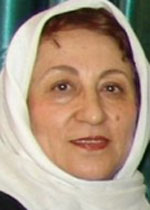

پذيرش > سایت نوشته ها > با حقوق زنان سياسي برخورد مي شود/گفتگو با ناهيد توسلي / روزآنلاين


 با حقوق زنان سياسي برخورد مي شود/گفتگو با ناهيد توسلي / روزآنلاين با حقوق زنان سياسي برخورد مي شود/گفتگو با ناهيد توسلي / روزآنلاين
4 اسفند 1386 - - نسخه قابل چاپ
ناهيد توسلي ازفعالان حوزه زنان و جزو گروه اوليه امضا کننده کمپين يک ميليون امضا براي تغيير قوانين زنان در گفت وگو با روز گفت نسبت هاي ناروايي که رسانه هاي محافظه کار و بخش هايي ازحاکميت به فعالان زنان مي دهند، هدف سياسي کردن مسائل حوزه زنان را دنبال مي کنند.
وي به طور مشخص به برخوردهاي انجام شده با کمپين يک ميليون امضا سخن مي گويد که طي يک سال گذشته محور بسياري از حرکت هاي اجتماعي مربوط به زنان بوده و هفته گذشته جايزه اولاف پالمه را براي يکي از اعضا موثر آن به همراه آورده است. پروين اردلان، روزنامه نگار، فعال اجتماعي و ازموثرترين مروجان حقوق زنان درايران جايزه اي را دريافت کرد که سال پيش از آن در اختيار کوفي عنان قرارگرفته بود.
توسلي درخصوص برخورد با اهداي چنين جوايزي گفت: "اينجا برخورد خوبي با کساني که درحوزه زنان کار مي کنند نمي شود درحالي که هدف اين افراد اين است که حقوقي که از زنان سلب شده را به آنها برگردانند." به گفته توسلي مسائلي که زنان آن را مطرح مي کنند همان چيزهايي است که اتفاقا حاکميت هم با آنها مشکل دارد: "همين چند روز پيش ديدم يکي ازنمايندگان درخواست کرده که لايحه ارث دوباره درمجلس مطرح شود. اين موضوع نشان مي دهد که حساسيت هاي فعالان زن درمورد مسائل زنان درجامعه دقيق است. خانم اردلان درحوزه هم خيلي فعال است و نوجواني اش را دراين راه گذاشته وزحمت کشيده است وطبيعي است که اين چنين مورد توجه قرار بگيرد."
توسلي به روز در خصوص برخورد جامعه مدني با اهداي جايزه اولاف پالمه به خانم اردلان تاکيد کرد: "فعالان زنان برخورد مثبتي با اين جايزه داشته اند به خاطر زحمتي که طي سالها کشيده است. اما برخي رسانه هاي مشهور نسبت هاي ناروا بيان مي کنند که واقعا کاردرستي نيست. چرا که اين افراد براي همان جامعه ايي کارمي کنند که همان رسانه ها وخانواده هايشان هم از فوايد تغييرات به عمل آمده استفاده خواهند کرد. متاسفانه حاکميت نظر خوش نشان نمي دهد و اتهاماتي را مطرح مي کند که ما که افرادي چون خانم اردلان را مي شناسيم، مي دانيم که صحت ندارند."
ناهيد توسلي که جزو گروه اوليه ايي بوده که به کمپين يک ميليون امضا پيوسته است درخصوص تاثيرات چنين جوايزي در ديده شدن تلاش هاي زنان گفت: "تاثير بسيار مثبتي گذاشته است. چون اولاف پالمه کسي بود که مثل وزير امورخارجه سوئد صلح دوست و با اعتبار بوده وترور شده است. اين جايزه به کساني داده مي شود که دراه صلح واحقاق حقوق مردم تحت فشار تلاش مي کنند. سال گذشته هم آقاي کوفي عنان اين جايزه را برده است وبه همين جهت اعتباري دارد که نمي توانيم ارزش هاي برنده اين جايزه را ناديده بگيريم."
اما چرا برخي مسئولان حکومتي هر گونه به رسميت شناخته شدن وديده شدن فعالان اجتماعي را در خارج ازمرزهاي ايران با بدبيني نگاه مي کنند؟ توسلي درپاسخ به اين پرسش اظهار داشت: "اين مساله سياسي است و من وارد حوزه سياست نمي شوم. اما فکر مي کنم اين برخوردهايي سياسي است که با اهداي اين جايزه ها مي کنند به دليل وضعي که ايران درجهان دارد وخطر حمله - که البته ما درايران آن را جدي نمي گيريم- معمولا فکر مي کنند کساني که جايزه مي گيرند عواملي هستند که ازخارج هدايت مي شوند ولي مردم به اين صورت فکر نمي کنند."
ناهيد توسلي مديرمسئول نشريه نافه درادامه درخصوص مسيري که حل مسائل زنان از طريق آن مي تواند انجام بگيرد گفت: "من هم فکر مي کنم مشکل زنان ايران جز از طريق توجه به ملاحظات ديني وبازخواني ونو نگري به دستورات ديني نمي تواند حل شود و توسعه توانمندي هاي جامعه زنان با توجه به شرايطي که درآن زندگي مي کنيم جز انتخاب چنين رويکردي از راه ديگري امکان پذير نمي باشد. مادرجامعه اي سنتي زندگي مي کنيم ومردم دراين سنت بزرگ شده اند. درکشور ما مردم ديني هستند وبنابراين بايد از طريق کانال هاي ديني تغييرات را پيگيري کنيم. به همين جهت فعالان زنان با بزرگان ديني کشور ديدار مي کنند ونظرات آنها را جويا مي شوند. به دليل اينکه فقه پويا وديناميک است. اينکه حالا ايستا شده بحثي جدا است. اما بايد روزآمد باشد. اين قوانيني که به اسلام نسبت داده مي شود به هرحال ازنظر بيرون بسيار وحشتناک است. من که خودم جزو گروه مذهبي هاهستم ومذهبم هم نوگراست فکر مي کنم هيچ مشکلي نيست که از طريق بازخواني قوانين ديني حقوق زنان را پيگيري کنيم."
منبع : روزآنلاين
ارسال به
بالاترین
،
توییتر
،
فریندفید
،
فیسبوک
در همين بخش :
 یک خبر تلخ؟ یک قانونشکنی؟ یک تصمیم بخشنامهای جدید؟ یک خبر تلخ؟ یک قانونشکنی؟ یک تصمیم بخشنامهای جدید؟
چرا بایست به سکسوالیته پرداخت؟ / نفیسه آزاد
آزارجنسی خانگی؛ «قربانی» نه، «نجات یافته»
زنان، بزرگترین بازندگان بهار عرب
سانسور از دیدگاه جنسیتی/الهه امانی
ديگر بخش ها :
طرح یک میلیون امضا
|
مقالات
|
سایت نوشته ها
|
اخبار
|
گزارش كمپين
|
گفت و گو
|
علیه سکوت
|
كوچه به كوچه
|
نامه های شما
|
گزارش ویژه
|
گفتگو با اعضا
|
ویژه سالگرد کمپین
|
تصویر برابری
|
دل آرام علی
|
تریبون
|
مقالات
|
تاریخ شفاهی
|
خارج از چارچوب
|
کتابخانه
|
درباره کمپین
|
کمپین در شهرها
|
کمپین در بند
|
صدای تغییر
|
ویژه 22 خرداد
|
لایحه حمایت از خانواده
|
گالری
|
عشا مومنی
|
امیر یعقوبعلی
|
خدیجه مقدم
|
راحله عسگری زاده و نسیم خسروی
|
پروین اردلان،جلوه جواهری، مریم حسین خواه، ناهید کشاورز
|
زینب پیغمبرزاده
|
سعیده امین، سارا ایمانیان، محبوبه حسین زاده، ناهید کشاورز و همایون نامی
|
احترام شادفر
|
نسیم سرابندی زاده،فاطمه دهدشتی
|
وبلاگ مهمان
|
پرونده خرم آباد
|
دستگیری ها
|
مریم مالک
|
پرستو اللهیاری
|
مهرنوش اعتمادی
|
سمیه رشیدی
|
Other Languages
|
همراهان
|
«فراخوان کمپین ده روز با بهاره هدایت»
| English
|